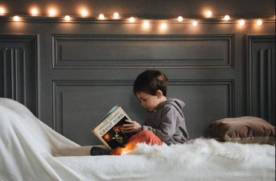
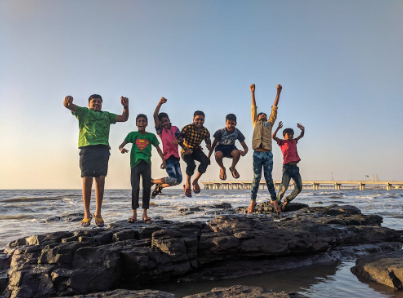
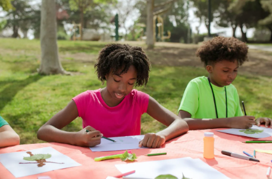

FMD - foreldre mot datamaskiner
alternativer til datamaskiner
Oppdag Magien Av Data-frie Alternativer!
Glem digitale kreasjoner! Her er noen ekte alternativer for ditt barns utvikling:
Kunst og håndverk: La fantasien blomstre med fargestifter, maling og lim.
Bokskatter: Gi dem en verden av eventyr med ekte bøker i stedet for skjermer.
Utendørs eventyr: La dem utforske den virkelige verden med friske luft og lek.
#AlternativerTilPC - Gi Fantasien Vinger!


